Dynamic materials for making animations on your slide of slideshow effects.
Wheel:

Creates a texture slide transitions. Translate one texture A to texture B with a wheel effect.
Wheel
Basic effects for 2D objects or no shadow situation.
Differences between set Texture B as None and Check TO_TRANSPARENT:

Wheel light /Surfaceshader
For 3D objects, with light and shadow.
remove "alpha:fade" at
#pragma surface surf Standard fullforwardshadows vertex:vert alpha:fade
and Tags {"Queue"="Transparent" } //cannot receive shadow
to receive shadow Color-Run:

Add a color changing light on the main texture.
Color-Run-Between-Two/With-Gradient-Map
Effects for 2D objects or no shadow situation.
Loop types:
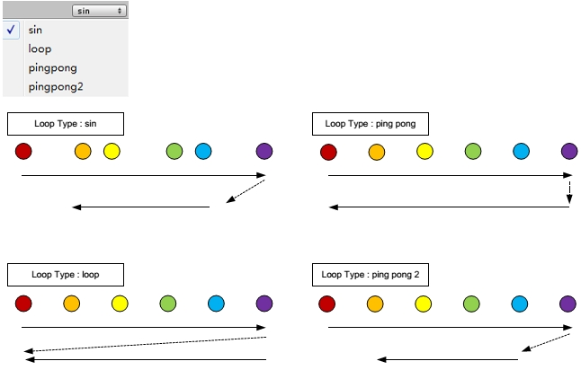
Blend types:
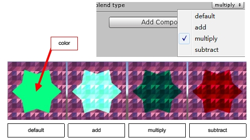
Halftone:

Texture slide transitions with a halftone effect.
There are two types of halftone effects, moving a halftone mask and points popup in grids.
Halftone Popup
The center of each point is aligned in grids determined by HALFTONE_SETTING (rotation, diameter, and aspect ratio).The radius of each point increased by Halftone position.
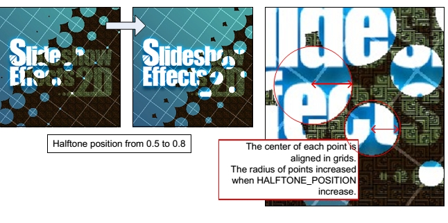
Halftone Popup Type B
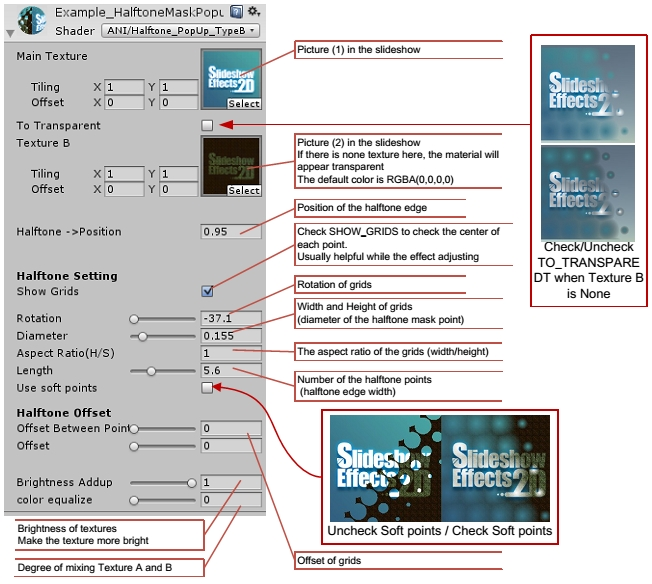
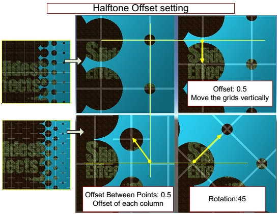
Halftone Popup Type A
Define a halftone with Vertical, flip, and offset option.
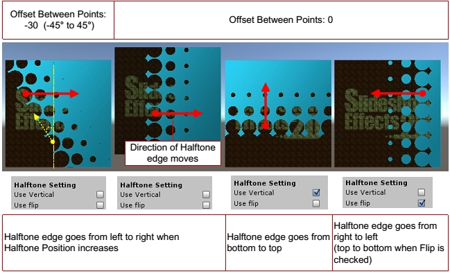
Halftone Mask (Lite)
Basic Effects with fewer Properties. For 2D objects or no shadow situation.
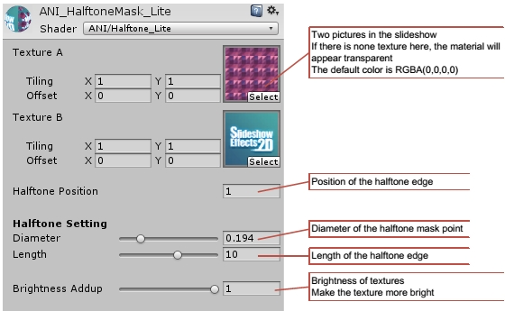
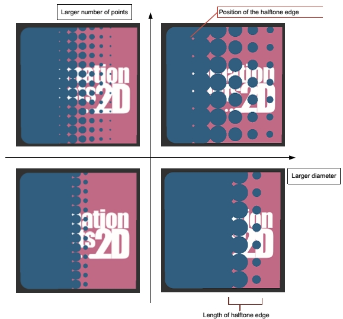
Halftone Mask Advantage (Type B)
Advantage effects. For no shadow situation.
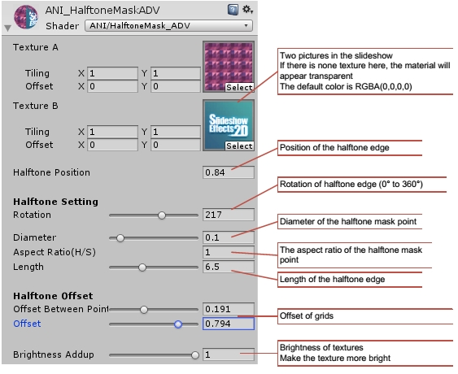
Vertical and Flip:

Rotation:


Halftone Mask Texture
Use a mask texture as the halftone mask.
Halftone Mask Light/Surfaceshader
For 3D objects, with light and shadow.
remove "alpha:fade" at
#pragma surface surf Standard fullforwardshadows vertex:vert alpha:fade
and Tags {"Queue"="Transparent" } //cannot receive shadow
to receive shadow Popup and Rotate:
Popup and Rotate(single texture)

make a texture zoomed and rotate.
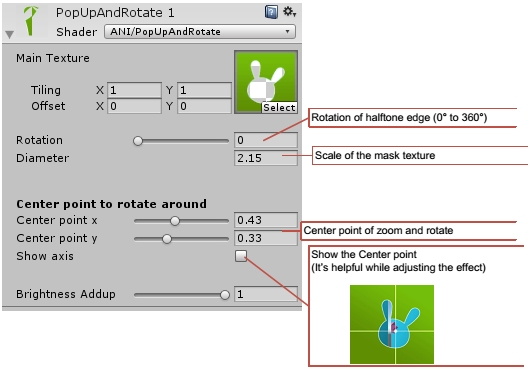
Popup and Rotate(mask)
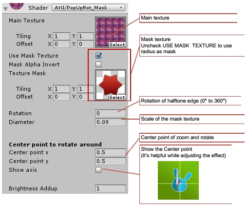
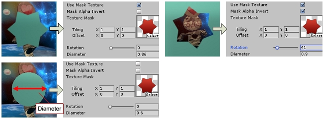
Texture Mask:
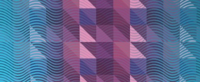
Texture slide transitions with a mask texture, use alpha channel or grayscale.
Texture slide transitions with a mask texture, use alpha channel or grayscale.
Texture Mask
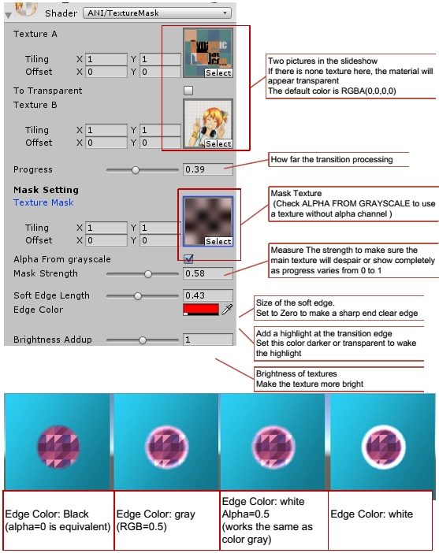
Grids and Pixelated:

Translate a texture in grids or pixel..
Grids
Texture slide transitions in grids.
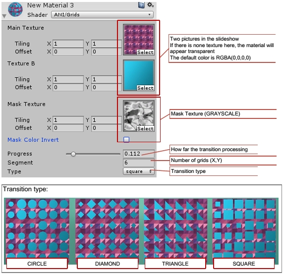
Popup Mask
Zoom the mask texture in grids.
You can use the Tiling and Offset of Mask Texture to adjust the effect.
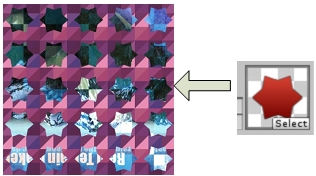
You can use the Tiling and Offset of Mask Texture to adjust the effect.
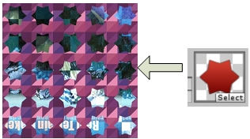
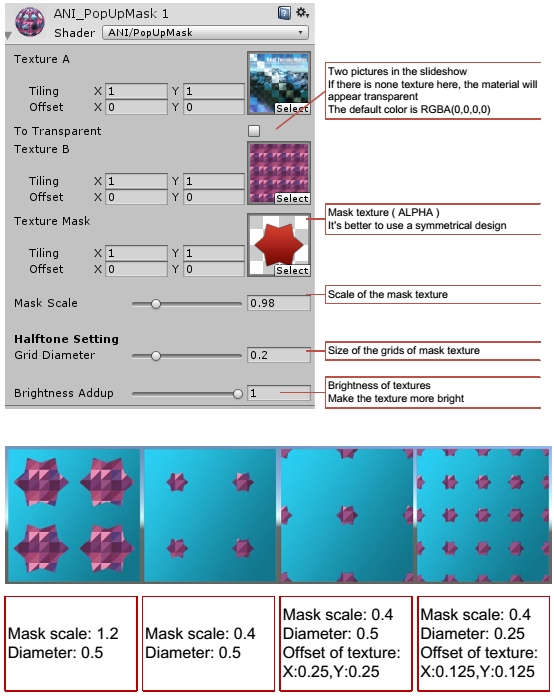
Grid Dissolve
A dissolve effect with grids.
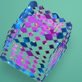
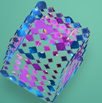
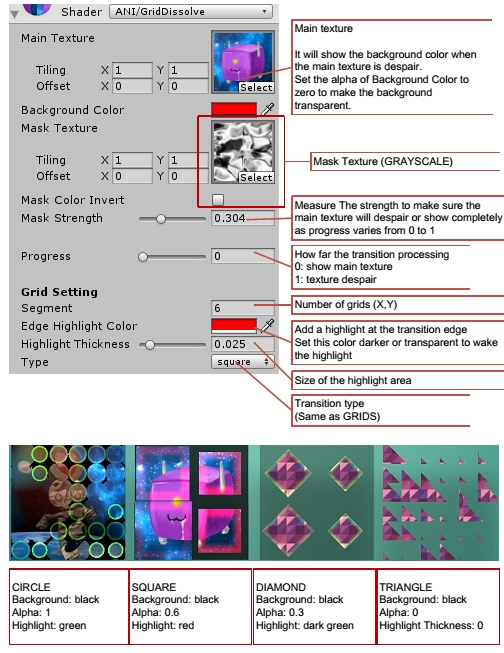
Pixelated Basic
Basic effects to make a texture Pixelated.


Pixelated Advantage
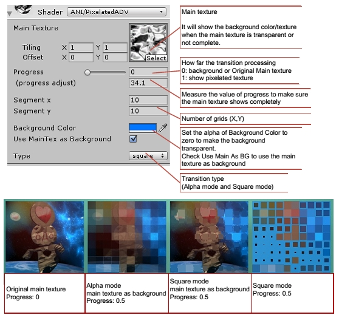
Triangular Billboard:

Analog a shutter or triangular billboard.
Shutter
The Basic Effects with minimum Properties. For 2D objects or no shadow situation.
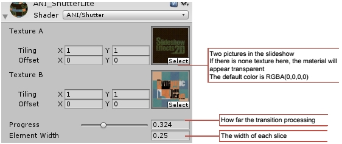
Triangular Billboard Advantage
Advantage effects with more Properties. For 2D objects or no shadow situation.
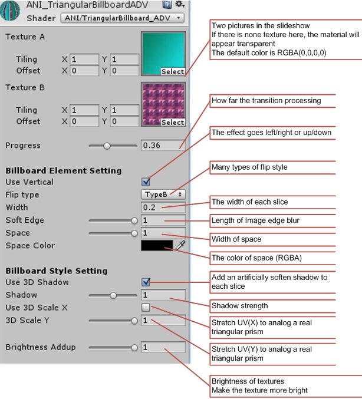
Triangular Billboard ADV light/Surfaceshader
For 3D objects, with a light and shadow.
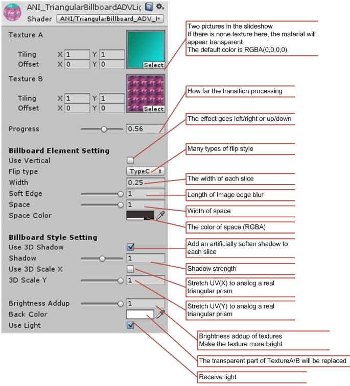

remove "alpha:fade" at
#pragma surface surf Standard fullforwardshadows vertex:vert alpha:fade
and Tags {"Queue"="Transparent" } //cannot receive shadow
to receive shadow